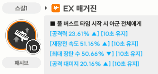
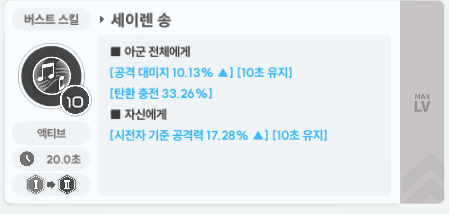

https://x.com/hysymnikke/status/2073196901940531378?s=20
으이..? 이 ??
수렐루에 재장전 고정없이 모드를 바꿀수있다는 이야기를 듣고 한번 실험해보았다.
수렐루 모드는 원래 한번 재장전을 한 상태에서 6초내로 다시 재장전을 하면 모드가 바뀌는데 두번 재장전하는 동안 장전시간이 고정된다.
하지만 아래 세가지 방법을 사용하면 고정 재장전을 피할 수 있다.
1) 프리바티를 활용한 최대장전
알다시피 크라운, 메스트, 애프바 등의 재장전속도 버프를 100%받으면 한번 엄폐하는 것만으로도 재장전이 된다.
이 상태에서 버스트를 써서 컷신사이에 한번 엄폐했다가 컷신끝나고 풀면 이미 재장전한걸로 쳐서 모드가 바뀐다!

재장전 100%를 달성하면 컷신중에 재장전 되는줄 알았더니 아니었다.
대신 프리바티를 쓰면 풀버할때 최대장탄수가 반토막이 나는데 이때 장탄수가 반 이상이라면 최대장탄이 되면서 모드가 충족된다.
이건 애프바가 아니어도 되는 것 같다.
첫 풀버에서 모드를 바꾸려면 프바를 편성하고 한번 재장전을 한 상태에서 3버 컷신동안 한번 엄폐하면 된다.
2) 세이렌 탄충
두번째는 세이렌 탄충을 이용한 방법이다.

세이렌의 버스트는 탄환을 30%를 채워주는 효과가 있다.
그런데 얘도 버스트 컷신 사이에 엄폐하면 재장전하는 사이에 최대 탄창이 되어서 모드변경 조건을 충족한 것으로 간주된다.
모드를 바꾸려면 한번 재장전을 한 상태에서 세이렌 1버컷신동안 한번 엄폐하면 된다.
3) 그렇다면 위의 둘을 섞으면?
세이렌과 프리바티를 편성한 상태에서 느린 재장전 없이 첫 풀버에 모드를 바꾸고 싶다면 아래처럼 행동하면 된다.
3-1. 세이렌 컷신동안 한번 엄폐 (탄충효과로 변경준비 버프 획득)
3-2. 3버 컷신동안 한번 엄폐 (프바 1스킬 효과로 모드 변경 조건 충족)
이렇게하면 실질적으로 재장전을 하지 않고 모드를 변경할 수 있게 된다.
참고로 이건 스끼리다. 버123그 아님. 내가 그렇게 정했삼.